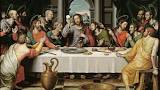

La Semana Santa es la conmemoración anual cristiana de la Pasión, Muerte y Resurrección de Jesús de Nazaret. Por eso, es un período de intensa actividad litúrgica dentro de las diversas confesiones cristianas. Da comienzo el Domingo de Ramos y finaliza el Domingo de Resurrección,1 aunque su celebración suele iniciarse en varios lugares el viernes anterior (Viernes de Dolores) y se considera parte de la misma el Domingo de Resurrección. La fecha de la celebración es variable (entre marzo y abril según el año) ya que depende del calendario lunar. La Semana Santa va precedida por la Cuaresma, que finaliza en la Semana de Pasión donde se celebra la eucaristía en el Jueves Santo, se conmemora la Crucifixión de Jesús el Viernes Santo y la Resurrección en la Vigilia Pascual durante la noche del Sábado Santo al Domingo de Resurrección. Durante la Semana Santa tienen lugar numerosas muestras de religiosidad popular a lo largo de todo el mundo, destacando las procesiones y las representaciones de la Pasión.
Los días más importantes de la Semana Santa son los formados por el llamado Triduo Pascual: La introducción al Triduo (el Jueves Santo y el Viernes Santo), en el que se conmemora la muerte de Cristo; Sábado Santo, en el que se conmemora a Cristo en el sepulcro, y el Domingo de Pascua de la Resurrección.
La palabra triduo en la práctica devocional católica sugiere la idea de preparación. A veces nos preparamos para la fiesta de un santo con tres días de oración en su honor, o bien pedimos una gracia especial mediante un triduo de plegarias de intercesión.
El triduo pascual se consideraba como tres días de preparación a la fiesta de pascua; comprendía el jueves, el viernes y el sábado de la semana santa. Era un triduo de la pasión.
Del mismo modo que la semana tiene su punto de partida y su momento culminante en el domingo, día del Señor, celebración semanal de la pascua, así el santo Triduo Pascual de la Pasión y Resurrección del Señor Jesús, es el punto culminante de todo el año litúrgico. El santo Triduo Pascual se prepara en el tiempo de Cuaresma y se prolonga en la alegría de los cincuenta días del Tiempo Pascual. Dada la importancia que él reviste, el Triduo Pascual ha de prepararse y celebrarse con esmero y reverencia. El presente trabajo, busca ser una guía práctica que oriente su celebración. De ahí que las normas, reflexiones y orientaciones que a continuación se presentan se ordenan a mejorar la celebración de los misterios de la Redención, y a favorecer la participación más consciente y fructuosa de los fieles cristianos en dichos misterios de vida. Este trabajo ha sido elaborado por expreso deseo del Eminentísimo Señor Cardenal, Juan Luis Cipriani Thorne, Arzobispo de Lima y Primado del Perú, con el anhelo que la celebración de la próxima Semana Santa, sea vivida intensamente en nuestra Arquidiócesis de Lima y nos impulse a "remar mar adentro", como ha pedido el Papa Juan Pablo II en su reciente Carta Apostólica, "Novo Millennio Ineunte".
.jpg)
Es en el Concilio de Nicea I (en el año 325) donde se llega finalmente a una solución para este asunto. En él se estableció que la Pascua de Resurrección había de ser celebrada cumpliendo unas determinadas normas: +Que la Pascua se celebrase en domingo. +Que no coincidiese nunca con la Pascua judía, que se celebraba independientemente del día de la semana. (De esta manera se evitarían +paralelismos o confusiones entre ambas religiones). +Que los cristianos no celebrasen nunca la Pascua dos veces en el mismo año. Esto tiene su explicación porque el año nuevo empezaba en el equinoccio primaveral, por lo que se prohibía la celebración de la Pascua antes del equinoccio real (antes de la entrada del Sol en Aries). No obstante, siguió habiendo diferencias entre la Iglesia de Roma y la Iglesia de Alejandría, si bien el Concilio de Nicea dio la razón a los alejandrinos, estableciéndose la costumbre de que la fecha de la Pascua se calculaba en Alejandría, que lo comunicaba a Roma, la cual difundía el cálculo al resto de la cristiandad. Finalmente, Dionisio el Exiguo (en el año 525), desde Roma convenció de las bondades del cálculo alejandrino, unificándose al fin el cálculo de la pascua cristiana. La Pascua de Resurrección es el domingo inmediatamente posterior a la primera Luna llena tras el equinoccio de marzo y se debe calcular empleando la Luna llena astronómica. Por ello puede ocurrir no antes del 22 de marzo y el 25 de abril como muy tarde. El ciclo vacacional que corresponde a la Semana Santa es conocido como "Semana de Turismo" en Uruguay, por una ley de 1919, de secularización de las fiestas religiosas.
524.jpg)

El Domingo de Ramos es aquel en el que los cristianos conmemoran la entrada de Jesús de Nazaret en Jerusalén, aclamado por una multitud exultante, días antes de su pasión, muerte y resurrección, según testimonian los cuatro evangelios canónicos. Dicho domingo es el pórtico espiritual de la Semana Santa. La fecha de su celebración es movible, enmarcada en el lapso de los meses de marzo o abril.
La mitología judeo-cristiana dice que diez siglos antes había entrado en la ciudad construida por David su hijo Salomón montado en un borrico. Las gentes de la ciudad aclamaron al hijo de David con gritos de hossana, (que significaba:¡viva!). Por otra parte la profecía de Zacarías dice que el Rey de Israel entraría en la ciudad del monte Sión sobre el lomo de un pollino como rey de paz y como símbolo de los nuevos tiempos (un pollino en lugar de su madre). La borrica simboliza al antiguo Israel, el pueblo de la Antigua Alianza. El pollino aún no montado por nadie es la montura real y mansa del rey de la nueva alianza. Era costumbre entre las gentes reunidas para la Pascua recibir con gritos y cánticos a los nuevos grupos que llegaban. Los Reyes eran recibidos además echando mantos, ramos de olivo y palmas a los pies de las monturas reales, alfombrando el suelo para que estos pisaran sobre ellos.
El Domingo de Resurrección, es el día en que Jesucristo resucita después de la crucifixión, va al encuentro con sus apóstoles y luego sube hacia los cielos, también es la finalización de la Semana Santa.
El verdadero origen de la Pascua se remonta al año 1513 antes de Cristo, cuando el pueblo judío emprendió su éxodo desde Egipto, hacia la Tierra Prometida. Se celebraba cada año, como recordatorio de la liberación del pueblo hebreo.
En la víspera del primer día, se comían hierbas amargas mojadas en vinagre, para recordar la tristeza de la servidumbre. Y se narraban en tono cadencioso cánticos que hacían alusión a las diez plagas de Egipto.
El Domingo de Resurrección o de Pascua es importante para los católicos, ya que con la Resurrección es cuando adquiere sentido toda su religión.
Este día de resurrección es alegre pero triste para los Cofrades, alegre por la manifestación de la resurrección que sustenta la religión y triste porque la Semana Santa finaliza.
Se realizan diversas procesiones religiosas, en muchas ciudades como coloflón de las fiestas desfilan representaciones de todas las cofradías, las procesiones de este día están llenas de color y alegria. Se mezclaran en los pasos capirotes de todos los colores que han desfilado a lo largo de la semana.
Hay pocas procesiones en el día de hoy...tampoco suele congregarse mucha gente porque en muchas ciudades comienzan a preparar las calles para volver a la rutina diaria, se recogen las sillas que se utilizaban para ver los pasos, se arreglan los balcones...las procesiones que hay suelen hacerse por la mañana y tienen el sabor de despedida de las fiestas y la vuelta a la tranquilidad.
LA SEMANA SANTA es una semana especial del año porque conmemora la ultima semana que vivió Jesús ante de su pasión, muerte y resurrección y es de intensa actividad litúrgica dentro de la Iglesia. Ahora, en el año 2011, el Domingo de Pascua fue el 24 de Abril, este año 2012 será el 8 de Abril y el próximo año 2013 será el 31 de Marzo.
A principios del siglo IV existía en el Cristianismo cierta confusión sobre cual fecha debería ser la permanente para conmemorar la Pascua Cristiana que recuerda la resurrección de Jesús.
En un principio y según el Concilio de Arlés en el año 314, los cristianos celebrarían la Pascua el mismo día y esta fecha la habría de determinar el Papa quién enviaría epístolas a todas las iglesias del mundo con las instrucciones necesarias.
Once años después, en el 325, en el Concilio de Nicea se llega finalmente a una solución: 1.-La Pascua se celebraría en Domingo por ser el día de la resurrección. 2.-Que no coincidiera nunca con la Pascua Judía, que se celebra cualquier día de la semana, de esta manera se evitarían confusiones entre ambas religiones
Para que usted mismo pueda calcular la fecha solo necesita averiguar cuando es el equinoccio de primavera en el hemisferio norte y cuando es la siguiente luna llena después del equinoccio. ¿Qué es el equinoccio? "Época en que, por hallarse el Sol sobre el Ecuador, los días son iguales a las noches en toda la Tierra, lo cual sucede anualmente del 20 al 21 de marzo [para la primavera]" (Diccionario de la Real Academia Español, vigésima segunda edición)
Durante la temporada vacacional de Semana Santa que se lleva a cabo en el municipio de Atlixco, el alcalde Ricardo Camacho Corripio dio a conocer las tradiciones de fe que distinguen a la entidad que, aunado a los diversos atractivos que la región ofrece, permitirá atraer más de 80 mil visitantes en estos días. Lo anterior representa un impacto en la economía de las familias de la entidad —de manera directa e indirecta— pues se calcula se tenga una derrama económica mayor a los 20 millones de pesos.
El Vía Crucis de Atlixco, en el estado de Puebla, en México, reúne desde hace más de un siglo en Semana Santa a un grupo de penitentes capaces de traspasar el umbral del dolor por su devoción, al salir en procesión encapuchados y descalzos, con grilletes y coronas de espinas.
Las principales calles de este municipio situado a unos 150 kilómetros por carretera de la capital mexicana, se cubren con alfombras decorativas elaboradas con serrín de colores en un recorrido de cinco kilómetros que comienza en el Exconvento de San Francisco.
Con un paso lento y quejumbroso, cientos de hombres semidesnudos y encadenados caminan en busca del perdón divino a través del dolor.
“Es la fe, la devoción que tenemos para salir y para que este año nos vaya bien a nosotros y a la familia, una obra de agradecimiento”, describe un engrillado a Efe los motivos que le llevan a salir cada año en la procesión.
Bajo el anonimato, el devoto confiesa que lleva un lustro participando y que lo hace con orgullo por todos los favores que el Señor le ha dado.
En otros casos, se agradece la cura de algún familiar que padecía una grave enfermedad.
Arrastran pesadas cadenas, que a veces superan los 100 kilos, con la cara tapada y una corona de espinas. En el pecho, los brazos, las piernas y en la espalda se clavan más espinas que una semana antes van a buscar descalzos a un cerro cercano, señala administradora del Exconvento de San Francisco, Judith Sánchez del Razo.
Se acerca la Semana Santa una de las festividades más importantes en Atlixco, en donde se espera la visita de más de 80 mil turistas nacionales y extranjeros, los que podrán revivir la muerte y resurrección de Jesucristo. Sin duda los visitantes podrán visitar innumerables sitios turísticos que hacen de este municipio un lugar muy grato.
Lo anterior fue expresado por la Directora de Activación de Atractivos Turísticos, Licenciada Isabel Santos, quien añadió que Atlixco cuenta con diversos sitios turísticos como la Parroquia de Santa María de Natividad, Templo de Santa Clara, Ex convento de la Merced, Casa de la Audiencia, Casa de los Aguilar, Casa de los Rangel, Alquería de Carrión, Ex Convento de San Francisco, Ermita de San Miguel, entre otros.
Mencionó que los habitantes de este municipio ponen una especial atención en las festividades de Semana Santa, la cual es una tradición que ha distinguido a Atlixco y la cual se basa en la Procesión del Silencio, en la comunidad de Nexatengo, la cual es realizada por la cofradía de Nazarenos de la entidad y la procesión de engrillados, cabe mencionar que ambos eventos son actos de penitencia, fe y de arrepentimiento.
En muchas ciudades de todo el mundo, cada año se lleva a cabo la representación del Vía Crucis y en nuestro país, en todo el territorio nacional las principales calles de las localidades son escenarios de la conmemoración de la Semana Santa. Entre las representaciones de la Pasión de Cristo que se realizan en México, sin duda la más añeja, llena de fervor y tradición es la que se lleva a cabo en el Cerro de la Estrella, en la delegación Iztapalapa, durante la Semana Mayor.
Los Festejos de Semana Santa de Iztapalapa son Patrimonio Cultural Intangible de la Ciudad de México. Desde hace 172 años, millones de mexicanos y turistas extranjeros han rememorado en el Cerro de la Estrella de Iztapalapa, la pasión de Cristo, la historia de cómo el hijo de Dios sufrió por el perdón de los pecados de la humanidad.
Desde el siglo XIX, en el pueblo de Iztapalapa, se realiza una representación plena de fervor religioso, tradición y fe. Se trata de la Pasión de Cristo, una de las representaciones sacras de corte popular, más realistas del orbe.
En 1843, en el marco de una epidemia de cólera, un grupo de niños y jóvenes sanos acudieron al Santuario del Señor de la Cuevita, para efectuar una misa y solicitar al santo que finalizara la epidemia. Al ocurrir finalmente este milagro, los iztapalapenses buscaron dar gracias al santo, con una escenificación de la Pasión y muerte de Jesucristo. Desde entonces se realiza este gran evento en Iztapalapa.
nicia la Semana Santa y en nuestro país y especialmente en el Distrito Federal en la delegación Iztapalapa se lleva a cabo una de las más famosas representaciones de la vida y pasión de Cristo.
El domingo 17 de abril se llevó a cabo iniciaron los festejos de semana santa en diversas delegaciones del Distrito Federal. Una de las más famosas es la que se lleva a cabo en la delegación Iztapalapa con la representación de la Vida y Pasión de Cristo. En las iglesias se lleva a cabo la tradicional venta de artesanías religiosas elaboradas con palma y trigo en la cual los artesanos de nuestro país muestran su sensibilidad.
En el centro de esta celebración, que se presenta tan festiva, está la palabra que hemos escuchado en el himno de la Carta a los Filipenses: «Se humilló a sí mismo» (2,8). La humillación de Jesús. Esta palabra nos desvela el estilo de Dios y, en consecuencia, aquel que debe ser el del cristiano: la humildad. Un estilo que nunca dejará de sorprendernos y ponernos en crisis: nunca nos acostumbraremos a un Dios humilde.
El Lunes Santo es el segundo de los días de la Semana Santa, cuyo comienzo tiene lugar el Domingo de Ramos, y durante la cual los cristianos conmemoran la Pasión, Muerte y Resurrección de Jesús de Nazaret. Así se pone de manifiesto en la liturgia de las distintas ceremonias que tienen lugar en Semana Santa en las distintas confesiones cristianas. Además de los actos celebrados en los templos, diversas manifestaciones populares tienen lugar durante la Semana Santa en todo el mundo, destacando las procesiones que se organizan en muchos pueblos y ciudades.
El Martes Santo continúa las celebraciones de la Semana Santa cristiana, que conforme va acercándose los días de los principales cultos (Jueves y Viernes Santo) siguen su reflexión acerca de diversos pasajes de la Pasión, Muerte y Resurrección de Jesús de Nazaret. Son días propicios para la reflexión profunda en los que la Iglesia nos invita como en una “última llamada” a acercarnos al sacramento de la confesión con el fin de estar preparados para vivir la Vigilia Pascual y el gran acontecimiento de la Pascua. El cristiano debe estar en gracia de Dios para participar con toda la Iglesia del gran banquete de la Eucaristía en la Misa más importante del año.

El Miércoles Santo marca el final de la Cuaresma y el comienzo de la Pascua. El Miércoles Santo es el día en que se reúne el Sanedrín con Judas Iscariote, el tribunal religioso judío, para condenar a Jesús.
El Jueves Santo es una fiesta cristiana que se celebra el jueves anterior al Domingo de Resurrección, dentro de la Semana Santa, y que abre el Triduo Pascual. En este día la Iglesia católica conmemora la institución de la Eucaristía en la Última Cena y el lavatorio de los pies realizado por Jesús.
VATICANO, 25 Mar. 16 / 11:20 pm (ACI).- Un año más, el Papa Francisco presidió esta tarde en la Basílica de San Pedro la celebración de la Pasión del Señor. La homilía la realizó como cada año el predicador de la Casa Pontificia, el P. Rainiero Cantalamessa, que reflexionó sobre la necesaria reconciliación de cada hombre con el Señor. “Dios no se ha contentado de perdonar los pecados del hombre; ha hecho infinitamente más, los ha tomado sobre sí y se los ha endosado”, dijo Cantalamessa. “Es la hora de darnos cuenta que lo opuesto de la misericordia no es la justicia, sino la venganza”, agregó más tarde.
DOMINGO DE RAMOS EN JERUSALÉN Al igual que en España, en Jerusalén se celebra una procesión para conmemorar la 'entrada triunfal de Jesús' en la ciudad: rememorando cuando fue recibido con palmas y ramas de olivo. Desde el Monte de los Olivos hasta la zona antigua de la ciudad, la comitiva comienza por la tarde en la Iglesia de Betfagé, continúa por Getsemaní y concluye en el casco histórico. Tras esta celebración hay que esperar al jueves siguiente, 2 de abril, para que continúen l ...
JUEVES SANTO En la mañana del Jueves Santo el Patriarca Latino de Jerusalén celebra a las 8.00 horas la Institución de la Eucaristía en el Santo Sepulcro y por la tarde, a las 15.30 horas, los Franciscanos efectúan su peregrinación tradicional al Cenáculo (la Sala Superior) en el Monte Sion. Por la noche, a partir de las 21.00 horas, peregrinos y cristianos locales velan durante una hora de meditación en el Huerto de Getsemaní. A este acto le sigue una procesión a la luz de velas hac ...

DOMINGO DE RESURRECCIÓN El 'día grande' de la Pascua y Semana Santa llega el Domingo de Resurrección. Durante la jornada se llevan a cabo celebraciones y misas con lectura del Evangelio en varias lenguas, así como una procesión hasta la Iglesia del Santo Sepulcro.
Leer mas: http://www.europapress.es/turismo/grandes-viajes/noticia-celebra-semana-santa-jerusalen-20150327122548.html
Hasta el año 1582, en que el Papa Gregorio XVI modificó el Calendario Juliano e introdujo un nuevo cómputo, todos los Cristianos celebraban la Pascua en las mismas fechas. Tras ese cambio de calendario, los católicos siguen celebrando la Pascua según el Calendario Gregoriano, mientras que los ortodoxos se rigen por el Calendario Juliano.
Grecia adoptó el Calendario Gregoriano en el año 1924, principalmente por motivos políticos. Así pues, el calendario oficial griego es el mismo que el de la mayoría de países del mundo; sin embargo, la Pascua sigue celebrándose según el antiguo calendario.
comienza la Semana Santa griega con la celebración del "Domingo de Ramos" ("Κυριακή των Βαίων"). La Semana Santa en Grecia se denomina "Μεγάλη Εβδομάδα" ("Megali Evdomáda"), que literalmente significa "Semana Grande". La Pascua, la celebración de la Resurrección de Cristo, es la mayor celebración religiosa del Cristianismo (tanto para ortodoxos como para católicos). Yo diría que la Pascua católica se centra más en la Pasión y Muerte de Jesús, mientras que la Pascua ortodoxa es más festiva y concede más importancia a la Resurrección de Jesucristo. De hecho, en Grecia todo el mundo se felicita la Pascua enviándose tarjetas, como en Navidad, hecho totalmente inexistente en el mundo católico.
La Pascua ortodoxa griega dura dos semanas: Durante la primera semana, denominada como hemos dicho "Megali Evdomáda", se ayuna y se va a misa. La segunda semana, llamada "Λαμπρή Εβδομάδα" ("Lambrí Evdomada") o "Semana Luminosa", se caracteriza por la alegría que implica la Resurrección del Señor.